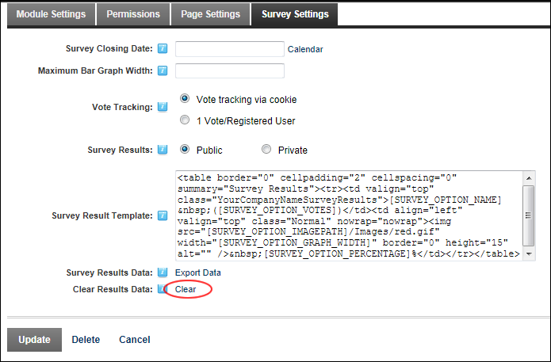

Clearing Survey Results Data
How to clear the existing votes on a Survey module. This allows you to restart the survey and is useful if you have been testing or demonstrating the survey.
-
- Select the Survey Settings tab.
- At Clear Results Data, click the Clear link. The link is now disabled, indicating there are currently no existing results.

- Click the Update button.